Deniz sondajı
Deniz sondajıAmbassadori Batumi Island
Yapay ada projesi için kapsamlı deniz sondajı ve zemin etüdü çalışmaları.
Proje detayları17 yıllık deneyimimizle karada olduğu gibi denizde de sağlam veriye ulaşıyoruz. Türkiye'nin resmî ruhsatlı sondaj gemisine sahip ilk ve tek firması olarak, deniz altındaki güveni mühendislikle buluşturuyoruz.
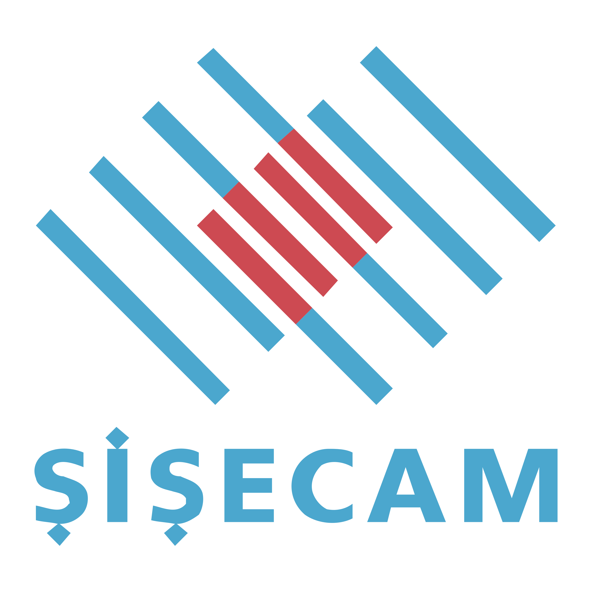
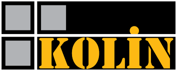
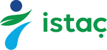
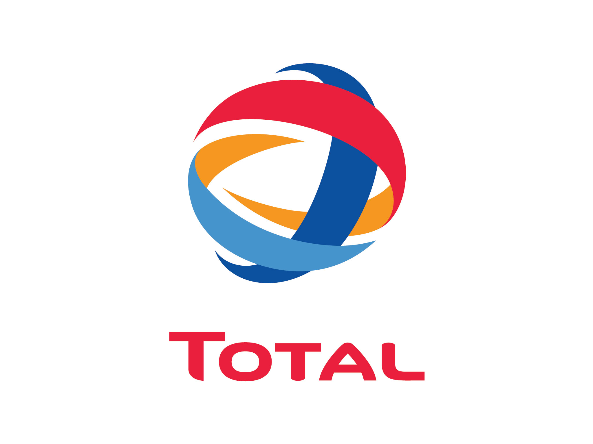
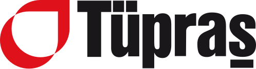
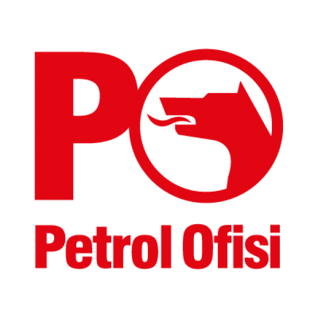
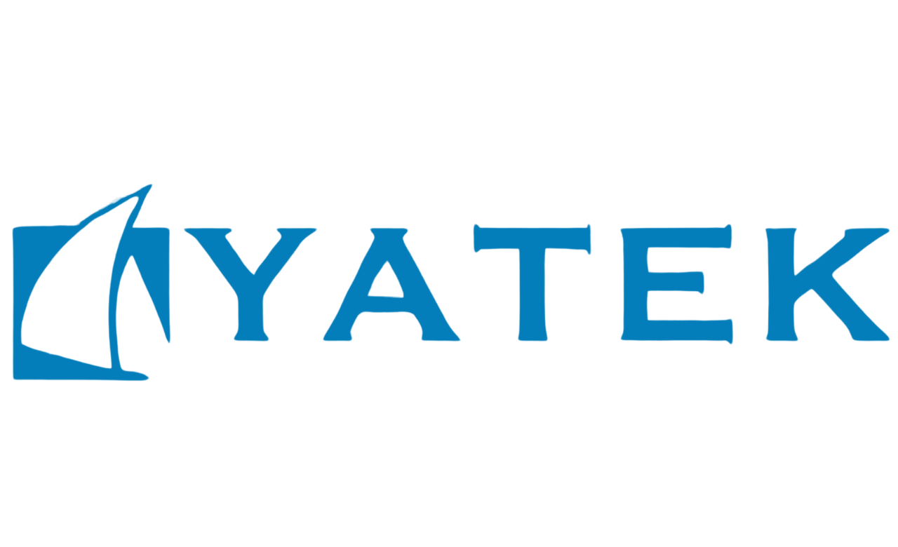
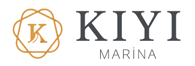
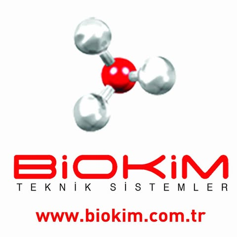


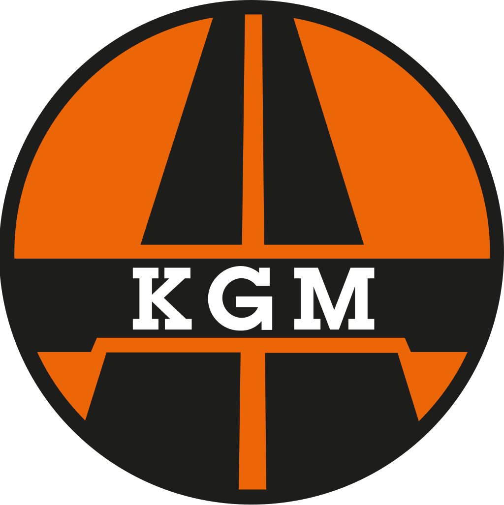
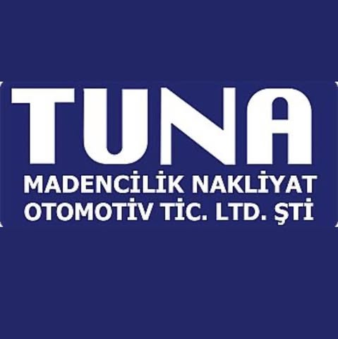
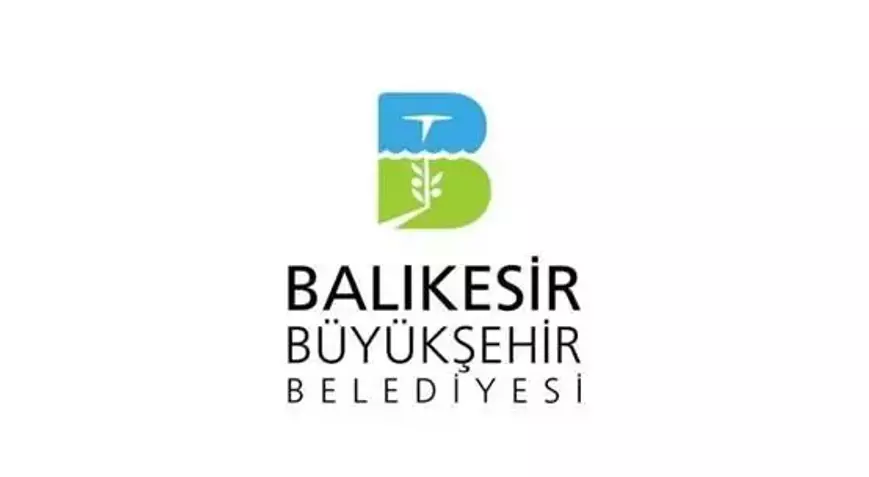
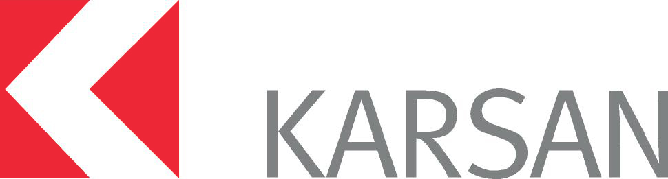
Deniz ve karada; sondajdan jeofizik ölçüme, batimetrik haritalamadan jeoteknik raporlamaya uçtan uca saha araştırması.
Derin, açık ve sığ deniz sondajları; ruhsatlı gemi, jack-up platform ve duba sistemleriyle.
İnceleZemin ve temel etütleri için karotlu sondaj, SPT, presiyometre ve yerinde deneyler.
İnceleGrab ve box corer sistemleriyle deniz tabanından bozulmamış numune alımı.
İnceleSingle & multi beam ekolot ve GNSS RTK ile yüksek çözünürlüklü deniz tabanı haritaları.
İnceleAltyapı, boşluk ve tabaka tespiti için tahribatsız yer radarı ve elektrik rezistivite.
İnceleMASW, mikrotremör ve kuyu içi sismik ölçümlerle zemin sınıfı ve dinamik parametreler.
İnceleİmar planına ve uygulamaya esas jeolojik-jeoteknik raporlar, mühendislik danışmanlığı.
İnceleİçme, sulama ve endüstriyel su ihtiyacı için ekonomik ve uzun ömürlü kuyu sistemleri.
İncele Jack-up platform · Karadeniz
Jack-up platform · Karadeniz
Deniz hareketlerinden etkilenmeden ayaklarını basıp yüzlerce metre derinliğe inebilen sistemimizle jeoteknik karot alımı, CPT, SPT ve su basınç deneylerini güvenle gerçekleştiriyoruz. Denizlerin altındaki güvenin adı: Zemin Teknik.
Gemide konuşlu sondaj makinelerinden batimetrik ve sismik cihazlara; her operasyonu kendi ekipman parkımız ve deneyimli sondör ekibimizle yürütüyoruz.
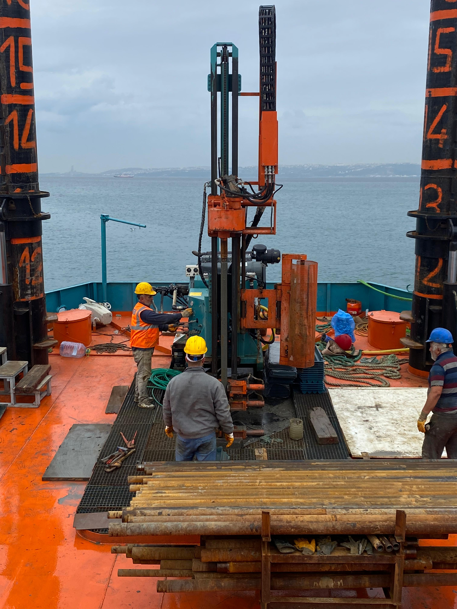
100+ m karotlu sondaj kapasitesi
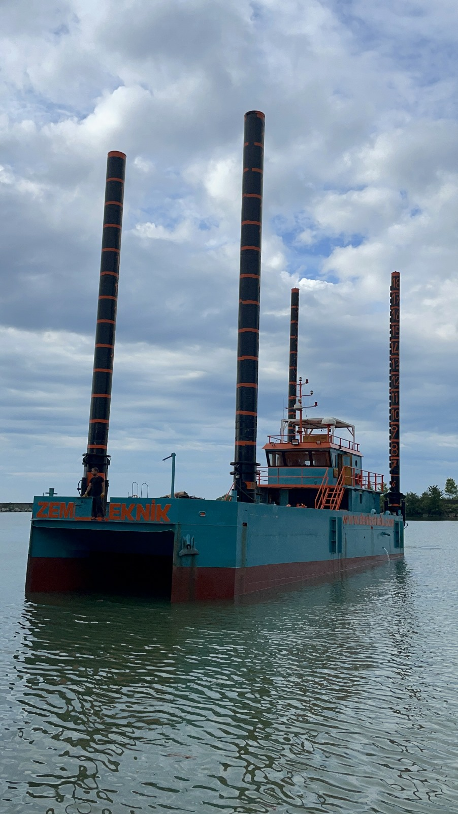
Türkiye'nin ilk ve tek
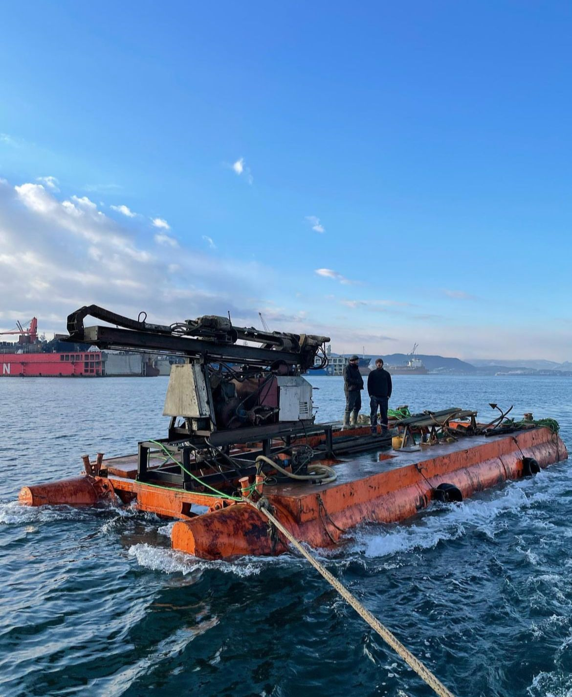
Jack-up ayaklı sabit çalışma
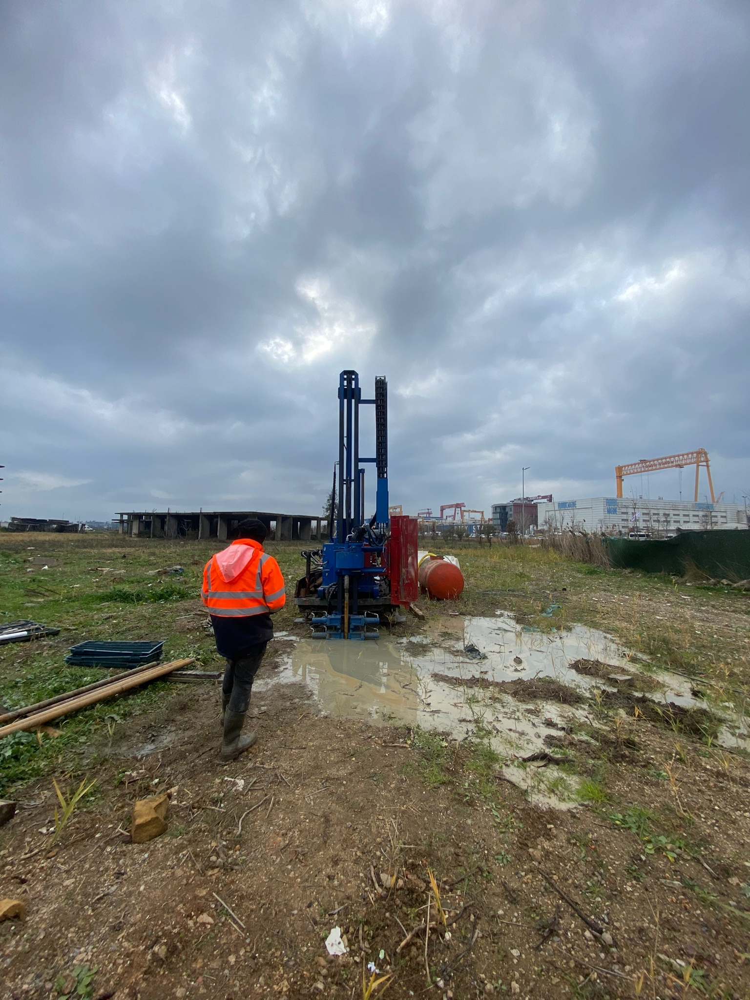
Yüksek verimli hidrolik tahrik

Deniz dibi numune alma sistemleri

Tahribatsız yer altı görüntüleme
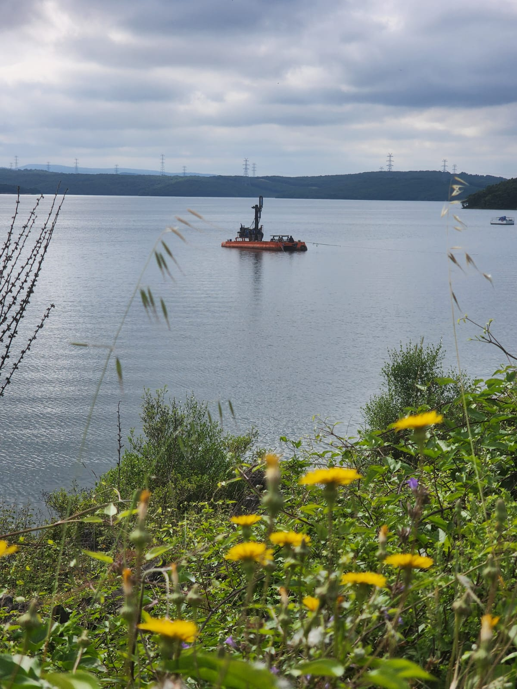
Single/multi beam ekolot, GNSS RTK

MASW, mikrotremör, kuyu içi sismik
Her adımı şeffaf, planlı ve ölçülebilir bir süreçle yönetiyoruz.
İhtiyaç ve hedeflerin belirlenmesi
Ekip ve ekipmanların sahaya sevki
Sondaj ve zemin etüdü uygulamaları
Numune alma ve yerinde ölçümler
Analiz ve detaylı rapor hazırlanması
Rapor teslimi ve memnuniyet takibi
Havalimanlarından kruvaziyer limanlarına, Türkiye'nin ve bölgenin büyük deniz yapılarında zemin verisi bizden.
Deniz sondajıYapay ada projesi için kapsamlı deniz sondajı ve zemin etüdü çalışmaları.
Proje detayları Zemin etüdü
Zemin etüdüDünyanın en büyük havalimanlarından biri için kıyı ve deniz sahası zemin etüdü çalışmaları.
Proje detayları Liman
LimanKruvaziyer limanı projesi için deniz tabanı sondajları ve zemin etüdü çalışmaları.
Proje detayları Deniz dolgusu
Deniz dolgusuDeniz dolgusu üzerine inşa edilen havalimanı projesinde kapsamlı zemin etüdü ve sondaj çalışmaları.
Proje detaylarıBaşarı hikâyelerimiz ve jeoteknik yöntemler üzerine yazılarımız.
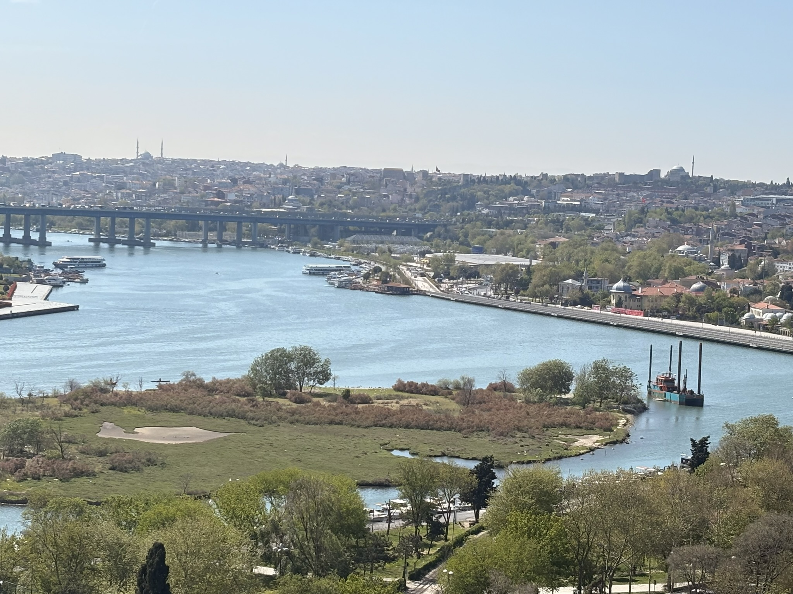
HaberİBB projeleri kapsamında Haliç Tekke Parkı'nda üstlendiğimiz ikinci deniz sondajı projesini rekor sürede tamamladık; 191 metre sondaj yalnızca 2 günde.
Devamını oku Haber
Haberİstanbul Boğazı'nın kalbinde 403 metrelik sondaj başarısı: akıntıya karşı direnç, İstanbul'un jeolojik hafızasına yolculuk.
Devamını oku Blog
BlogZemine verilen yapay titreşimlerin yayılma hızından katmanları analiz eden, hızlı ve tahribatsız sismik yöntem.
Blog'a gitSaha koşullarınızı paylaşın; ekipman, süre ve maliyet içeren net bir teklifle 24 saat içinde dönüş yapalım.